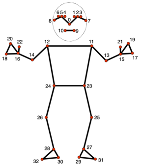

Model structure
model.py is responsible for routing the training and prediction to the right model. When running model.py train modelX=pytorch_model cams=[500,501] from ./control.sh, the pseudocode below in model.py loads the right model and passes the needed information for training and prediction to the model.
import modelX
modelX.train(pose_NP, motion_NP, cams)
motion = modelX.train(pose_NP, cams)
pred= modelX.train(pose_NP, cams)
modelX can now have all information that it needs for training or prediction. Each model has to define at least the following interfaces:
modelX.py:
def modelX.train():
FL_POSE = FLATTEN_POSE_BY_SCENARIO(pose_NP, cams)
// 1, [LDATA_a], [LDATA_b]
x = join(FL_POSE, motion_NP)
// [LDATA_a], [LDATA_b], [JDATA_a]
train with the data above
SAVE_MODEL_AS(str(cams))
def modelX.predict(pose_NP, cams):
FL_POSE = FLATTEN_POSE_BY_SCENARIO(pose_NP, cams)
LOAD_MODEL(str(cams), FL_POSE)
WHATEVER
return motion_np

Preprocessing
Pose landmark detected by Mediapipe:

These landmarks can be normalised in many ways. Three potential steps of normalization (feature engineering) of MediaPipe landmarks:
- Position normalization
- Scale normalization
- Rotation normalization